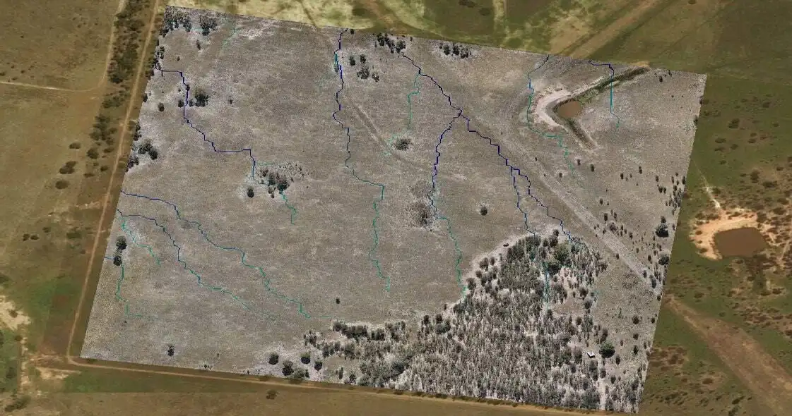
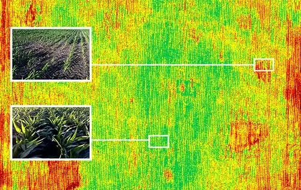
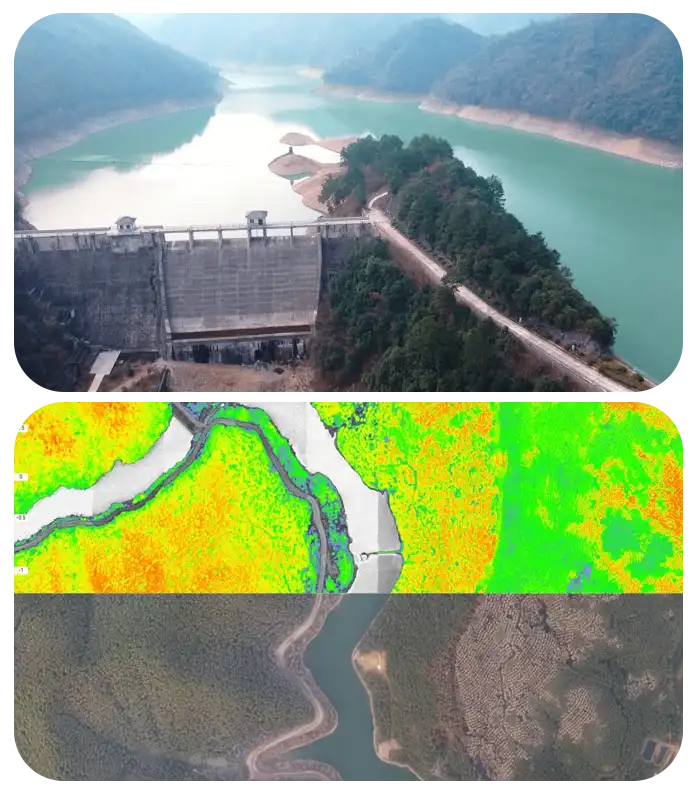
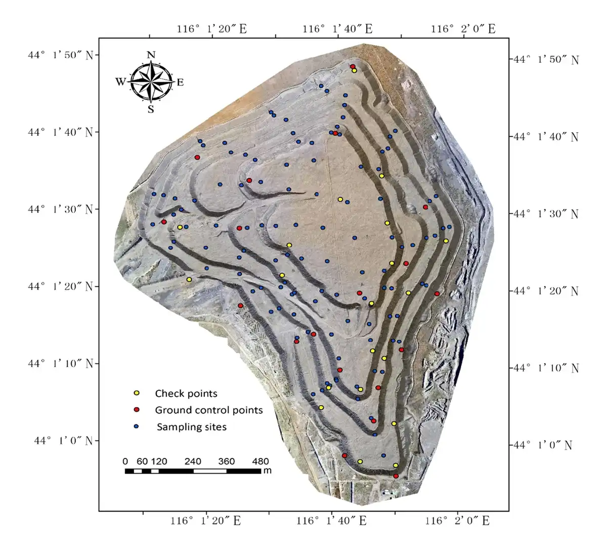
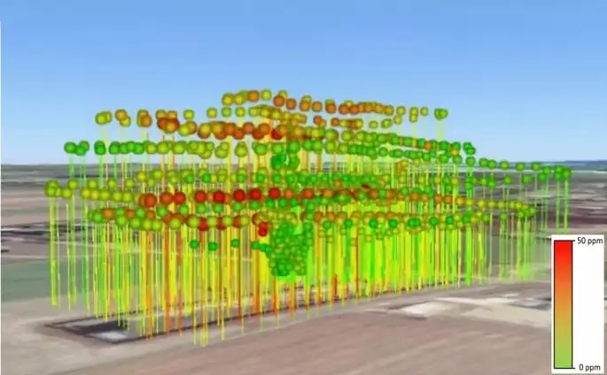

Environmental Drone Surveys
In short: we survey forests, wetlands, rivers and degraded land with drones carrying high-resolution, multispectral, thermal and air quality sensors, tied to DGPS ground control so repeat surveys can be compared. Our in-house GIS team delivers habitat maps, forest health analysis, erosion and land degradation measurements, water quality data and particulate and gas readings. See hyperspectral surveys.

Habitat Mapping and Monitoring
High-Resolution Habitat Mapping and MonitoringOur drones capture high-resolution aerial images, which we use for:
- Mapping Habitats We create detailed maps of various habitats, providing a clear overview of their structure and extent.
- Monitoring Changes Over Time Regular drone surveys help track changes in habitats, allowing for early detection of potential issues and informed decision-making.
These surveys help in understanding ecosystems, tracking wildlife populations and managing conservation work. Current, high-resolution data gives conservation plans a sound factual base.
Forestry and Vegetation Analysis
Forest Health Assessment
Our drones capture high-resolution multispectral images, providing detailed information on vegetation health. By analyzing these images, we can identify areas affected by diseases, pests, or environmental stressors, allowing for timely interventions.
Monitoring Tree Growth
Repeat surveys with high-resolution imagery let us track tree growth over time, detect anomalies and support sustainable forest management.
Disease and Pest Detection
Drones equipped with thermal cameras can detect subtle changes in tree temperature, which often indicate the presence of diseases or pests. Early detection allows for prompt action to mitigate damage and preserve forest health.

Water Resource Management
Water Quality Monitoring
Drones fitted with suitable sensors and cameras can assess several water quality parameters, including:
- Temperature: Thermal sensors detect temperature variations in water bodies.
- pH Levels: Specialized sensors measure the acidity or alkalinity of water.
- Turbidity: High-resolution cameras assess water clarity by detecting the presence of suspended particles.
- Chemical Contaminants: Drones can identify pollutants such as heavy metals, nitrates, and phosphates through spectral analysis.
Regular monitoring helps in maintaining water safety standards and addressing contamination issues promptly.
Depth Measurement
Using sonar and LiDAR, drones can measure the depth of water bodies. This data is used for:
- Navigational Charts Providing accurate and up-to-date information for safe navigation.
- Sediment Analysis Understanding sediment accumulation patterns for dredging purposes.
- Habitat Studies Assessing the aquatic environment to support marine life research and conservation efforts.
Depth measurement via drones is faster and safer compared to traditional methods.
Pollutant Detection
Drones with multispectral and hyperspectral sensors help detect pollutants in water bodies. They can:
- Identify Oil Spills Detecting the presence and extent of oil contamination.
- Chemical Spills Spotting areas affected by chemical spills from industrial discharges.
- Nutrient Loads Measuring levels of nitrogen and phosphorus that contribute to algal blooms.
Early detection lets pollution be contained and corrected sooner, limiting environmental damage.
Irrigation System Management and Flood Risk Assessment
Drones help manage irrigation systems and assess flood risk through:
- Irrigation Audits: Monitoring the distribution and efficiency of irrigation systems to optimize water usage and enhance crop yields.
- Flood Mapping Creating detailed topographic maps to predict flood-prone areas.
- Flood MonitoringProviding real-time data during flood events to support emergency response and evacuation planning.
- Erosion Control Monitoring riverbanks and coastal areas to identify erosion patterns and implement preventive measures.


Soil and Land Degradation
Detailed topographic data from drone surveys shows where soil is being eroded and how fast. Comparing high-resolution imagery and 3D models from repeat surveys identifies vulnerable areas, measures erosion rates and supports erosion control measures.
Land Degradation Monitoring
Drone surveys map degraded land, including loss of vegetation, soil fertility and biodiversity, and track changes over time to help identify the causes. The data supports targeted restoration plans and shows whether land management measures are working.
Desertification Processes
In areas at risk of desertification, drones monitor changes in land cover and vegetation health. Multispectral and thermal images show early signs such as reduced vegetation cover and more exposed soil, so action can be taken in time.
Land Restoration Projects
On restoration projects, drones record the existing land condition and identify areas that need work. Repeat surveys then track progress, show the effect of the work and confirm whether objectives are being met.
Air Quality Monitoring
For air quality surveys, our drones can carry sensors that measure the following parameters:
Particulate Matter (PM) Detection
- Drones equipped with particulate matter sensors can accurately measure PM1, PM2.5, and PM10 levels in the atmosphere. This data is vital for assessing air pollution levels and understanding health risks associated with fine particulate matter.
CO2 and Gas Monitoring
- Gas sensors on our drones measure carbon dioxide (CO2) and other gases such as methane (CH4), nitrogen dioxide (NO2), sulphur dioxide (SO2) and ozone (O3), to evaluate greenhouse gas emissions and air quality compliance.
Environmental Pollutant Assessment
- Drone sensors can detect pollutants including volatile organic compounds (VOCs), airborne toxins and industrial emissions, helping to identify pollution sources and check regulatory compliance.
Real-Time Data Collection
- Drones cover large areas quickly and give real-time air quality readings, supporting prompt decisions in environmental management and emergency response.

Our Features

Fast Data Delivery
Our in-house GIS team processes and analyses drone survey data promptly, so deliverables reach you on or before schedule.
Survey-Grade Accuracy
Every survey is tied to DGPS ground control points, so measurements and volumes can be relied on.

Team of Experts
Our team of GIS engineers, drone pilots and software engineers works round the clock on survey projects.
Advanced Equipment
We fly both DJI and custom-built drones fitted with high-resolution sensors.
Frequently asked questions
What can a drone environmental survey measure?
Depending on the sensors fitted, a drone survey can map habitat extent, assess forest health with multispectral imagery, flag stressed trees with thermal cameras, record water temperature, pH and turbidity, measure water depth with sonar or LiDAR, measure soil erosion from repeat terrain models, and read PM1, PM2.5, PM10, CO2, methane, NO2, SO2 and ozone levels.
How much does a drone environmental survey cost in India?
There is no single rate. The price depends on the size of the area, which sensors are needed, the accuracy and ground control required, terrain and access, the deliverables, and whether it is a one-off or repeat survey. Send us the site boundary as a KML and the parameters you need measured, and we will quote for that scope.
Can drone surveys track environmental change over time?
Yes. Repeat surveys of the same site are compared to show change in habitats, vegetation cover, tree growth and erosion. Because every survey is tied to DGPS ground control points, results from different flights line up, so erosion rates and restoration progress can be measured rather than estimated.
Can a drone measure air quality?
Yes. Drones can carry particulate matter sensors for PM1, PM2.5 and PM10, and gas sensors for carbon dioxide, methane, nitrogen dioxide, sulphur dioxide and ozone, as well as sensors for volatile organic compounds. They cover large areas quickly and give real-time readings, which helps locate pollution sources and check regulatory compliance.